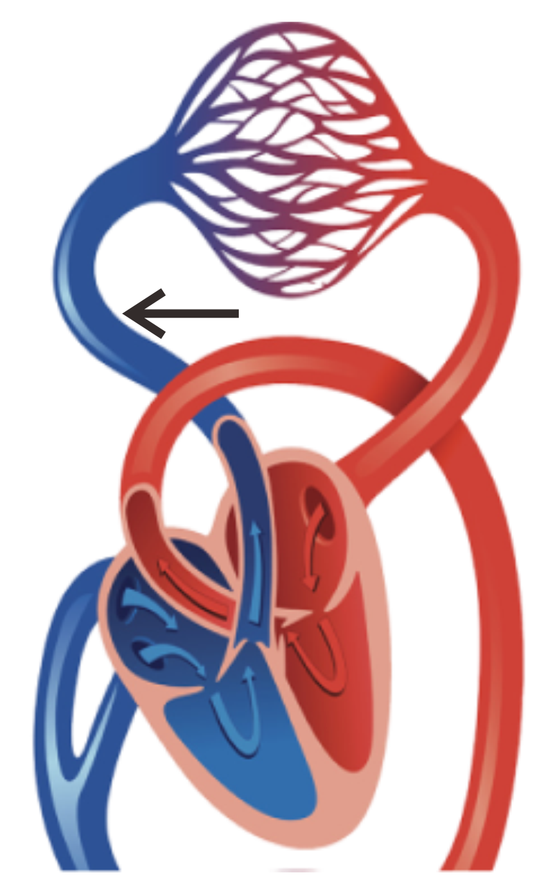
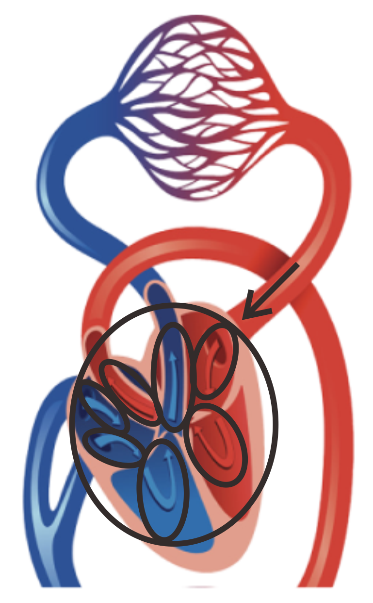

TEORITY
MEDIA AJAR INTERAKTIF
BERPETUALANG DI DALAM TUBUH MANUSIA
MEDIA AJAR INTERAKTIF
BERPETUALANG DI DALAM TUBUH MANUSIA

Organ Sistem Peredaran Darah ada 4, yaitu :
1. Jantung
2. Arteri
3. Vena
4. Darah
Jantung berfungsi untuk memompa darah sehingga dapat mengalir ke seluruh tubuh. Jantung terdiri atas empat ruangan, yaitu serambi kanan, serambi kiri, bilik kanan, dan bilik kiri. Serambi adalah ruangan untuk menerima dan menampung darah yang masuk jantung. Serambi berfungsi untuk memompa darah menuju bilik. Dinding serambi lebih tipis daripada dinding bilik, agar aliran darah tetap satu arah, maka ada klep (katup) yang terletak diantara serambi dan bilik. Katup inilah yang mencegah darah yang sudah masuk ke bilik untuk kembali serambi.Bilik adalah ruang untuk menampung darah yang akan dipompakan ke seluruh tubuh. Bilik berfungsi untuk memompakan darah ke seluruh tubuh. Bilik memiliki dinding yang tebal.
" onclick="myFunctionKu(this)"> ARTERIArteri membawa darah yang kaya oksigen dari jantung dan mengalirkannya menuju kapiler atau kembali ke jantung. Arteri memainkan peran kunci dalam mengatur aliran darah ke kapiler jaringan. Sekitar 10 persen dari total volume darah ada di sistem arteri sistemik pada waktu tertentu.Dalam sistem peredaran darah pulmonal, arteri mengangkut darah yang memiliki kandungan oksigen rendah. Darah diangkut dari ventrikel kanan ke paru-paru. Sedangkan dalam sistem sistemik, arteri mengangkut darah beroksigen dari ventrikel kiri ke jaringan tubuh.
" onclick="myFunctionKu(this)"> VENAVena membawa darah terdeoksigenasi ke paru-paru. Dengan begitu, paru-paru akan menerima oksigen dan dapat bekerja dengan baik.Dalam sistem peredaran darah pulmonal, vena mengangkut darah dari paru-paru ke atrium kiri jantung. Darah ini memiliki kandungan oksigen yang tinggi karena baru saja dioksigenasi di paru-paru. Sedangkan dalam sistem sistemik, vena mengangkut darah dari jaringan tubuh ke atrium kanan jantung. Darah ini memiliki kandungan oksigen yang berkurang karena oksigen telah digunakan untuk kegiatan metabolisme dalam sel-sel jaringan.
" onclick="myFunctionKu(this)"> DARAHDarah adalah komponen yang bergerak dalam hampir setiap aktivitas di dalam tubuh. Darah mengangkut hormon, nutrisi, oksigen, antibodi, dan.Darah juga melakukan aktivitas penting lainnya yang diperlukan untuk menjaga kesehatan tubuh.
" onclick="myFunctionKu(this)">*silahkan di klik salah satu organ
Organ Sistem Peredaran Darah ada 4, yaitu :
1. Jantung
2. Arteri
3. Vena
4. Darah
Ulas Kami :